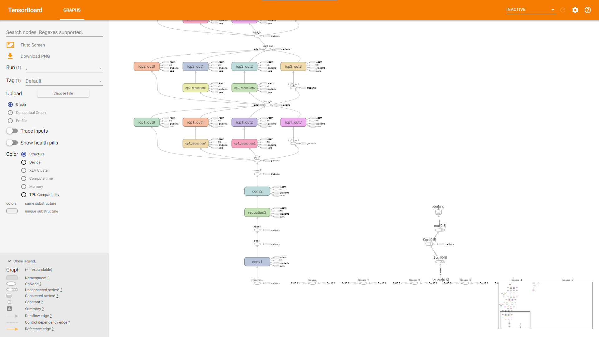
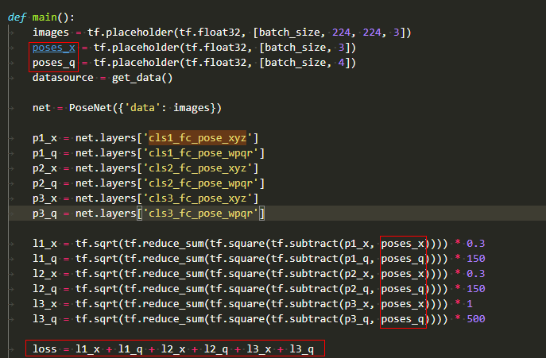
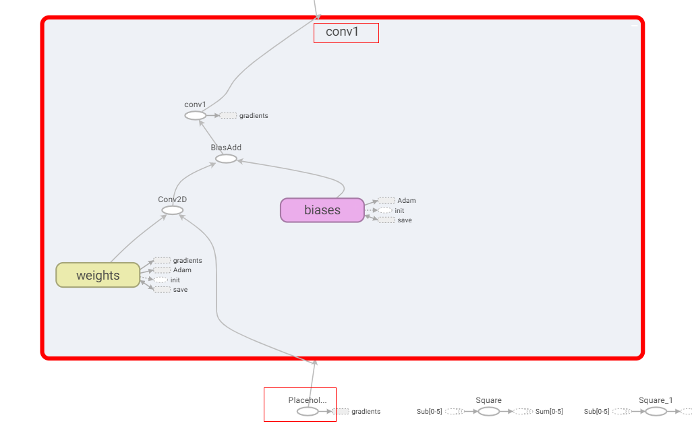
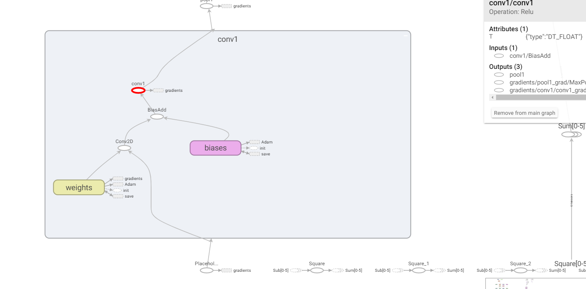

迁移脚本

概述
本文档主要介绍，怎样将网络脚本从TensorFlow或PyTorch框架迁移至MindSpore。
TensorFlow脚本迁移MindSpore
通过读TensorBoard图，进行脚本迁移。
以TensorFlow实现的PoseNet为例，演示如何利用TensorBoard读图，编写MindSpore代码，将TensorFlow模型迁移到MindSpore上。
此处提到的PoseNet代码为基于Python2的代码，需要对Python3做一些语法更改才能在Python3上运行，具体修改内容不予赘述。
改写代码，利用
tf.summary接口，保存TensorBoard需要的log，并启动TensorBoard。打开的TensorBoard如图所示，图例仅供参考，可能因log生成方式的差异，TensorBoard展示的图也有所差异。

找到3个输入的Placeholder，通过看图并阅读代码得知，第二、第三个输入都只在计算loss时使用。



至此，我们可以初步划分出，构造网络模型三步：
第一步，在网络的三个输入中，第一个输入将在backbone中计算出六个输出；
第二步，上一步结果与第二、第三个输入在loss子网中计算loss；
第三步，利用
TrainOneStepCell自动微分构造反向网络；利用TensorFlow工程中提供的Adam优化器及属性，写出对应的MindSpore优化器来更新参数，网络脚本骨干可写作：import mindspore from mindspore import nn from mindspore.nn import TrainOneStepCell from mindspore.nn import Adam # combine backbone and loss class PoseNetLossCell(nn.Cell): def __init__(self, backbone, loss): super(PoseNetLossCell, self).__init__() self.pose_net = backbone self.loss = loss def construct(self, input_1, input_2, input_3): p1_x, p1_q, p2_x, p2_q, p3_x, p3_q = self.poss_net(input_1) loss = self.loss(p1_x, p1_q, p2_x, p2_q, p3_x, p3_q, input_2, input_3) return loss # define backbone class PoseNet(nn.Cell): def __init__(self): super(PoseNet, self).__init__() def construct(self, input_1): """do something with input_1, output num 6""" return p1_x, p1_q, p2_x, p2_q, p3_x, p3_q # define loss class PoseNetLoss(nn.Cell): def __init__(self): super(PoseNetLoss, self).__init__() def construct(self, p1_x, p1_q, p2_x, p2_q, p3_x, p3_q, poses_x, poses_q): """do something to calc loss""" return loss # define network backbone = PoseNet() loss = PoseNetLoss() net_with_loss = PoseNetLossCell(backbone, loss) opt = Adam(net_with_loss.trainable_params(), learning_rate=0.001, beta1=0.9, beta2=0.999, eps=1e-08, use_locking=False) net_with_grad = TrainOneStepCell(net_with_loss, opt)
接下来，我们来具体实现backbone中的计算逻辑。
第一个输入首先经过了一个名为conv1的子图，通过看图可得，其中计算逻辑为：

输入->Conv2D->BiasAdd->ReLU，虽然图上看起来，BiasAdd后的算子名虽然为conv1，但其实际执行的是ReLU。

这样一来，第一个子图conv1，可以定义如下，具体参数，与原工程中的参数对齐：
class Conv1(nn.Cell): def __init__(self): super(Conv1, self).__init__() self.conv = Conv2d() self.relu = ReLU() def construct(self, x): x = self.conv(x) x = self.relu(x) return x
通过观察TensorBoard图和代码，我们不难发现，原TensorFlow工程中定义的conv这一类型的子网，可以复写为MindSpore的子网，减少重复代码。
TensorFlow工程conv子网定义：
def conv(self, input, k_h, k_w, c_o, s_h, s_w, name, relu=True, padding=DEFAULT_PADDING, group=1, biased=True): # Verify that the padding is acceptable self.validate_padding(padding) # Get the number of channels in the input c_i = input.get_shape()[-1] # Verify that the grouping parameter is valid assert c_i % group == 0 assert c_o % group == 0 # Convolution for a given input and kernel convolve = lambda i, k: tf.nn.conv2d(i, k, [1, s_h, s_w, 1], padding=padding) with tf.variable_scope(name) as scope: kernel = self.make_var('weights', shape=[k_h, k_w, c_i / group, c_o]) if group == 1: # This is the common-case. Convolve the input without any further complications. output = convolve(input, kernel) else: # Split the input into groups and then convolve each of them independently input_groups = tf.split(3, group, input) kernel_groups = tf.split(3, group, kernel) output_groups = [convolve(i, k) for i, k in zip(input_groups, kernel_groups)] # Concatenate the groups output = tf.concat(3, output_groups) # Add the biases if biased: biases = self.make_var('biases', [c_o]) output = tf.nn.bias_add(output, biases) if relu: # ReLU non-linearity output = tf.nn.relu(output, name=scope.name) return output
则对应MindSpore子网定义如下：
from mindspore import nn from mindspore.nn import Conv2d, ReLU class ConvReLU(nn.Cell): def __init__(self, channel_in, kernel_size, channel_out, strides): super(ConvReLU, self).__init__() self.conv = Conv2d(channel_in, channel_out, kernel_size, strides, has_bias=True) self.relu = ReLU() def construct(self, x): x = self.conv(x) x = self.relu(x) return x
那么，对照着TensorBoard中的数据流向与算子属性，backbone计算逻辑可编写如下：
from mindspore.nn import MaxPool2d import mindspore.ops as ops class LRN(nn.Cell): def __init__(self, radius, alpha, beta, bias=1.0): super(LRN, self).__init__() self.lrn = ops.LRN(radius, bias, alpha, beta) def construct(self, x): return self.lrn(x) class PoseNet(nn.Cell): def __init__(self): super(PoseNet, self).__init__() self.conv1 = ConvReLU(3, 7, 64, 2) self.pool1 = MaxPool2d(3, 2, pad_mode="SAME") self.norm1 = LRN(2, 2e-05, 0.75) self.reduction2 = ConvReLU(64, 1, 64, 1) self.conv2 = ConvReLU(64, 3, 192, 1) self.norm2 = LRN(2, 2e-05, 0.75) self.pool2 = MaxPool2d(3, 2, pad_mode="SAME") self.icp1_reduction1 = ConvReLU(192, 1, 96, 1) self.icp1_out1 = ConvReLU(96, 3, 128, 1) self.icp1_reduction2 = ConvReLU(192, 1, 16, 1) self.icp1_out2 = ConvReLU(16, 5, 32, 1) self.icp1_pool = MaxPool2d(3, 1, pad_mode="SAME") self.icp1_out3 = ConvReLU(192, 5, 32, 1) self.icp1_out0 = ConvReLU(192, 1, 64, 1) self.concat = ops.Concat(axis=1) self.icp2_reduction1 = ConvReLU(256, 1, 128, 1) self.icp2_out1 = ConvReLU(128, 3, 192, 1) self.icp2_reduction2 = ConvReLU(256, 1, 32, 1) self.icp2_out2 = ConvReLU(32, 5, 96, 1) self.icp2_pool = MaxPool2d(3, 1, pad_mode="SAME") self.icp2_out3 = ConvReLU(256, 1, 64, 1) self.icp2_out0 = ConvReLU(256, 1, 128, 1) self.icp3_in = MaxPool2d(3, 2, pad_mode="SAME") self.icp3_reduction1 = ConvReLU(480, 1, 96, 1) self.icp3_out1 = ConvReLU(96, 3, 208, 1) self.icp3_reduction2 = ConvReLU(480, 1, 16, 1) self.icp3_out2 = ConvReLU(16, 5, 48, 1) self.icp3_pool = MaxPool2d(3, 1, pad_mode="SAME") self.icp3_out3 = ConvReLU(480, 1, 64, 1) self.icp3_out0 = ConvReLU(480, 1, 192, 1) """etc""" """...""" def construct(self, input_1): """do something with input_1, output num 6""" x = self.conv1(input_1) x = self.pool1(x) x = self.norm1(x) x = self.reduction2(x) x = self.conv2(x) x = self.norm2(x) x = self.pool2(x) pool2 = x x = self.icp1_reduction1(x) x = self.icp1_out1(x) icp1_out1 = x icp1_reduction2 = self.icp1_reduction2(pool2) icp1_out2 = self.icp1_out2(icp1_reduction2) icp1_pool = self.icp1_pool(pool2) icp1_out3 = self.icp1_out3(icp1_pool) icp1_out0 = self.icp1_out0(pool2) icp2_in = self.concat((icp1_out0, icp1_out1, icp1_out2, icp1_out3)) """etc""" """...""" return p1_x, p1_q, p2_x, p2_q, p3_x, p3_q
相应的，loss计算逻辑可编写如下：
class PoseNetLoss(nn.Cell): def __init__(self): super(PoseNetLoss, self).__init__() self.sub = ops.Sub() self.square = ops.Square() self.reduce_sum = ops.ReduceSum() self.sqrt = ops.Sqrt() def construct(self, p1_x, p1_q, p2_x, p2_q, p3_x, p3_q, poses_x, poses_q): """do something to calc loss""" l1_x = self.sqrt(self.reduce_sum(self.square(self.sub(p1_x, poses_x)))) * 0.3 l1_q = self.sqrt(self.reduce_sum(self.square(self.sub(p1_q, poses_q)))) * 150 l2_x = self.sqrt(self.reduce_sum(self.square(self.sub(p2_x, poses_x)))) * 0.3 l2_q = self.sqrt(self.reduce_sum(self.square(self.sub(p2_q, poses_q)))) * 150 l3_x = self.sqrt(self.reduce_sum(self.square(self.sub(p3_x, poses_x)))) * 1 l3_q = self.sqrt(self.reduce_sum(self.square(self.sub(p3_q, poses_q)))) * 500 return l1_x + l1_q + l2_x + l2_q + l3_x + l3_q
最终，你的训练脚本应该类似如下所示：
if __name__ == "__main__": backbone = PoseNet() loss = PoseNetLoss() net_with_loss = PoseNetLossCell(backbone, loss) opt = Adam(net_with_loss.trainable_params(), learning_rate=0.001, beta1=0.9, beta2=0.999, eps=1e-08, use_locking=False) net_with_grad = TrainOneStepCell(net_with_loss, opt) """dataset define""" model = Model(net_with_grad) model.train(epoch_size, dataset)
这样，就基本完成了模型脚本从TensorFlow到MindSpore的迁移，接下来就是利用丰富的MindSpore工具和计算策略，对精度进行调优，在此不予详述。
PyTorch脚本迁移MindSpore
通过读PyTorch脚本，直接进行迁移。
PyTorch子网模块通常继承
torch.nn.Module，MindSpore通常继承mindspore.nn.Cell；PyTorch子网模块正向计算逻辑需要重写forward方法，MindSpore子网模块正向计算逻辑需要重写construct方法。以常见的Bottleneck类在MindSpore下的迁移为例。
PyTorch工程代码
# defined in PyTorch class Bottleneck(nn.Module): def __init__(self, inplanes, planes, stride=1, mode='NORM', k=1, dilation=1): super(Bottleneck, self).__init__() self.mode = mode self.relu = nn.ReLU(inplace=True) self.k = k btnk_ch = planes // 4 self.bn1 = nn.BatchNorm2d(inplanes) self.conv1 = nn.Conv2d(inplanes, btnk_ch, kernel_size=1, bias=False) self.bn2 = nn.BatchNorm2d(btnk_ch) self.conv2 = nn.Conv2d(btnk_ch, btnk_ch, kernel_size=3, stride=stride, padding=dilation, dilation=dilation, bias=False) self.bn3 = nn.BatchNorm2d(btnk_ch) self.conv3 = nn.Conv2d(btnk_ch, planes, kernel_size=1, bias=False) if mode == 'UP': self.shortcut = None elif inplanes != planes or stride > 1: self.shortcut = nn.Sequential( nn.BatchNorm2d(inplanes), self.relu, nn.Conv2d(inplanes, planes, kernel_size=1, stride=stride, bias=False) ) else: self.shortcut = None def _pre_act_forward(self, x): residual = x out = self.bn1(x) out = self.relu(out) out = self.conv1(out) out = self.bn2(out) out = self.relu(out) out = self.conv2(out) out = self.bn3(out) out = self.relu(out) out = self.conv3(out) if self.mode == 'UP': residual = self.squeeze_idt(x) elif self.shortcut is not None: residual = self.shortcut(residual) out += residual return out def squeeze_idt(self, idt): n, c, h, w = idt.size() return idt.view(n, c // self.k, self.k, h, w).sum(2) def forward(self, x): out = self._pre_act_forward(x) return out
根据PyTorch和MindSpore对卷积参数定义的区别，可以翻译成如下定义：
from mindspore import nn import mindspore.ops as ops # defined in MindSpore class Bottleneck(nn.Cell): def __init__(self, inplanes, planes, stride=1, k=1, dilation=1): super(Bottleneck, self).__init__() self.mode = mode self.relu = nn.ReLU() self.k = k btnk_ch = planes // 4 self.bn1 = nn.BatchNorm2d(num_features=inplanes, momentum=0.9) self.conv1 = nn.Conv2d(in_channels=inplanes, out_channels=btnk_ch, kernel_size=1, pad_mode='pad', has_bias=False) self.bn2 = nn.BatchNorm2d(num_features=btnk_ch, momentum=0.9) self.conv2 = nn.Conv2d(in_channels=btnk_ch, out_channels=btnk_ch, kernel_size=3, stride=stride, pad_mode='pad', padding=dilation, dilation=dilation, has_bias=False) self.bn3 = nn.BatchNorm2d(num_features=btnk_ch, momentum=0.9) self.conv3 = nn.Conv2d(in_channels=btnk_ch, out_channels=planes, kernel_size=1, pad_mode='pad', has_bias=False) self.shape = ops.Shape() self.reshape = ops.Reshape() self.reduce_sum = ops.ReduceSum() if mode == 'UP': self.shortcut = None elif inplanes != planes or stride > 1: self.shortcut = nn.SequentialCell([ nn.BatchNorm2d(num_features=inplanes, momentum=0.9), nn.ReLU(), nn.Conv2d(in_channels=inplanes, out_channels=planes, kernel_size=1, stride=stride, pad_mode='pad', has_bias=False) ]) else: self.shortcut = None def _pre_act_forward(self, x): residual = x out = self.bn1(x) out = self.relu(out) out = self.conv1(out) out = self.bn2(out) out = self.relu(out) out = self.conv2(out) out = self.bn3(out) out = self.relu(out) out = self.conv3(out) if self.shortcut is not None: residual = self.shortcut(residual) out += residual return out def construct(self, x): out = self._pre_act_forward(x) return out
PyTorch的反向传播通常使用
loss.backward()实现，参数更新通过optimizer.step()实现，在MindSpore中，这些不需要用户显式调用执行，可以交给TrainOneStepCell类进行反向传播和梯度更新。最后，训练脚本结构应如下所示：# define dataset dataset = ... # define backbone and loss backbone = Net() loss = NetLoss() # combine backbone and loss net_with_loss = WithLossCell(backbone, loss) # define optimizer opt = ... # combine forward and backward net_with_grad = TrainOneStepCell(net_with_loss, opt) # define model and train model = Model(net_with_grad) model.train(epoch_size, dataset)
PyTorch和mindspore在一些基础API的定义上比较相似，比如mindspore.nn.SequentialCell和torch.nn.Sequential，另外，一些算子API可能不尽相同，此处列举一些常见的API对照，更多信息可以参考MindSpore官网的MindSpore与PyTorch对照表。
PyTorch |
MindSpore |
|---|---|
tensor.view() |
mindspore.ops.operations.Reshape()(tensor) |
tensor.size() |
mindspore.ops.operations.Shape()(tensor) |
tensor.sum(axis) |
mindspore.ops.operations.ReduceSum()(tensor, axis) |
torch.nn.Upsample[mode: nearest] |
mindspore.ops.operations.ResizeNearestNeighbor |
torch.nn.Upsample[mode: bilinear] |
mindspore.ops.operations.ResizeBilinear |
torch.nn.Linear |
mindspore.nn.Dense |
torch.nn.PixelShuffle |
mindspore.ops.operations.DepthToSpace |
值得注意的是，尽管torch.nn.MaxPool2d和mindspore.nn.MaxPool2d在接口定义上较为相似，但在Ascend上的训练过程中，MindSpore实际调用了MaxPoolWithArgMax算子，该算子与TensorFlow的同名算子功能相同，在迁移过程中MaxPool层后的输出MindSpore与PyTorch不一致是正常现象，理论上不影响最终训练结果。